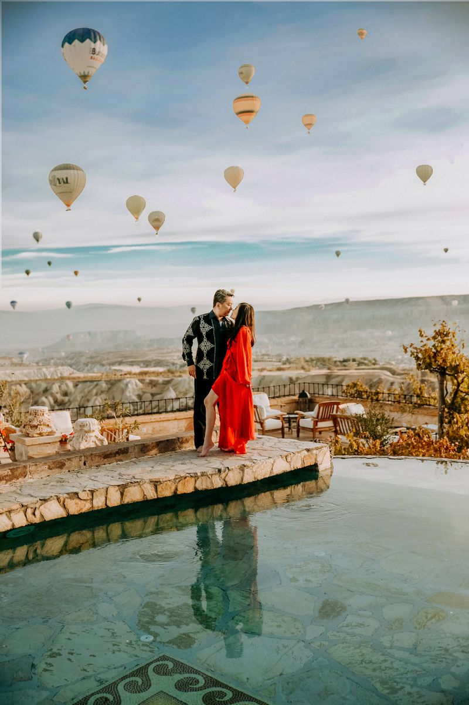

¿Dónde se hacen exactamente las fotos? Un mapa de nuestras localizaciones

«Entonces, ¿dónde nos hacéis realmente las fotos?» Es una pregunta justa: la mayoría de quienes reservan una sesión en Capadocia solo han visto un puñado de fotos en internet y no saben si muestran un único lugar famoso o una docena de sitios distintos. La respuesta honesta es: una docena, repartidos en una zona pequeña, y cuáles usemos esa mañana depende del viento, de la luz y de tu paquete. Aquí tienes la geografía real detrás de esas fotos, lugar por lugar.
Göreme: donde empieza la mañana y, a menudo, también termina
Göreme es el pequeño pueblo que está en el centro de todo, y la mayoría de nuestros huéspedes se aloja aquí o en la vecina Uçhisar. No es solo un punto de recogida: el propio pueblo está dentro de un valle de chimeneas de hadas, y varios hoteles cueva tienen terrazas con vistas directas a Göreme y al campo donde despegan los globos. Si tu hotel tiene una buena terraza, a veces empezamos la sesión allí mismo antes de que salga el sol, y luego nos movemos a los valles abiertos a medida que la luz aumenta. Esto también significa que tus últimas fotos de la mañana pueden ser cerca de tu propio hotel, con el café a pocos pasos.
Los valles: Valle del Amor, Valle de las Palomas, Valle Rosa
Aquí es donde ocurren la mayoría de las imágenes más potentes. Los valles de Capadocia están tallados en la misma roca volcánica, por siglos de viento y lluvia, pero cada uno tiene un aspecto distinto. El Valle del Amor tiene las torres de roca altas y estrechas que la mayoría imagina al pensar en Capadocia: abierto, dramático, y el escenario al que recurrimos cuando un vestido volador necesita espacio para moverse. El Valle de las Palomas es más estrecho y verde, con miles de palomares tallados en el acantilado. El Valle Rosa se tiñe de rosa y naranja intenso al atardecer, por lo que para nosotros es una localización de última hora de la tarde y no de amanecer. Elegimos entre ellos cada mañana según la dirección del viento y qué valle recibirá antes la luz, no según un guion fijo.
Uçhisar y los miradores altos
Uçhisar se asienta en el punto más alto de la región, construido alrededor de una fortaleza natural de roca, y las carreteras que suben hasta allí pasan por varios miradores abiertos con vistas a todo el sistema de valles. Los usamos menos para retratos de cerca y más para los planos amplios: tú, pequeño en el encuadre, con las formaciones rocosas de Capadocia extendiéndose detrás y los globos pasando si esa mañana vuelan. Es también uno de los pocos lugares desde donde se ven varios valles a la vez, por lo que suele convertirse en la foto que los huéspedes eligen para imprimir.
La tienda de alfombras y el taller de farolillos
No toda buena foto necesita luz de día. Un puñado de tiendas de alfombras familiares de la región tienen sus trastiendas llenas de suelo a techo de kilims tejidos a mano, y un taller de farolillos llena una sala de piedra con cientos de lámparas de mosaico encendidas. Ambos ofrecen un tipo de imagen completamente distinto: cálida, con textura, en interior, y ambos son una buena opción si la mañana se nubla o simplemente quieres variar más allá de los valles. Llevamos años trabajando con los mismos dos dueños de tienda, que es precisamente por lo que nos dejan fotografiar allí: no son paradas turísticas genéricas.
Dónde están los caballos salvajes — y dónde no
Capadocia tiene una manada de caballos semisalvajes que pastan en llanuras abiertas fuera de los valles principales, y en una sesión al atardecer a veces llevamos a los huéspedes hasta ellos. Queremos ser claros con esto: la manada se mueve según su propio horario, pastando donde haya hierba y agua esa semana, y ningún fotógrafo puede decirte de antemano que estarán en un campo concreto una tarde concreta. Cuando los encontramos, salen algunas de las imágenes más cinematográficas que hacemos en todo el año. Cuando no, la propia localización del atardecer —normalmente un tramo tranquilo y elevado de llanura— sigue dándote esa misma luz amplia de la hora dorada, solo que sin caballos.
Las localizaciones de un vistazo
| Localización | Mejor momento | Qué obtienes allí |
|---|---|---|
| Göreme y terrazas de hoteles cueva | Antes del amanecer / después del atardecer | Vista amplia del pueblo, campo de globos de fondo |
| Valle del Amor | Amanecer | Torres de roca altas, espacio abierto para el vestido volador |
| Valle de las Palomas | Amanecer / día completo | Más estrecho y verde, palomares tallados en los acantilados |
| Valle Rosa | Atardecer | Roca rosa y naranja en la hora dorada |
| Miradores de Uçhisar | Amanecer / atardecer | Planos amplios con varios valles a la vez |
| Tienda de alfombras y taller de farolillos | Cualquier momento, sobre todo si está nublado | Luz cálida de interior, sin riesgo del clima |
| Llanuras abiertas | Atardecer | Caballos salvajes, si los encontramos esa tarde |
¿Y quién decide a dónde vamos?
Lo decidimos nosotros, esa misma mañana, normalmente de camino a recogerte. Comprobamos la dirección del viento, porque determina qué valle recibe primero la luz suave; comprobamos si los operadores de globos van a volar ese día, porque eso cambia qué mirador tiene sentido; y tenemos en cuenta lo que nos contaste al reservar —un vestido volador, un look concreto, si mencionaste la tienda de alfombras—. Una sesión de día completo simplemente significa que podemos cubrir más puntos de este mapa en una sola jornada: valle al amanecer, terraza de hotel cueva con la luz del desayuno, tienda de alfombras o taller de farolillos si el sol de la tarde se vuelve demasiado duro, y de nuevo las llanuras al atardecer. Una sola sesión de amanecer o atardecer significa que elegimos las dos o tres localizaciones que mejor funcionarán esa mañana o esa tarde en concreto, en lugar de correr para pasar por todas.
Si quieres ver qué localizaciones incluye cada duración de sesión, échale un vistazo a nuestra página de paquetes.